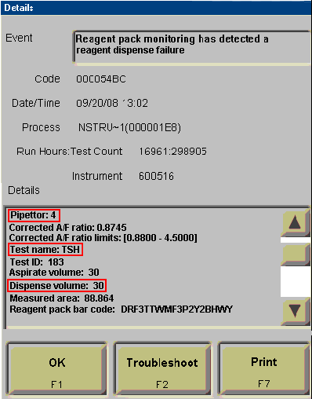

Troubleshooting Reagent Pack Process Monitoring
Purpose
This document provides instructions for troubleshooting failures of the reagent pack process monitoring.
Definition
A/E ratio: Actual Measured Area / Expected Area. The expected area is determined using the pressure sensor calibration.
For a detailed explanation of reagent pack process monitoring, refer to the Fluidics: Reagent Pack Process Monitoring Operating Principles document.
Event Log Messages
These event log messages for reagent pack process monitoring can be seen on systems running software V4.0 or greater.
| Event Log Message or Error | Error Details or Issue |
|---|---|
| Reagent pack monitoring failed to initialize. |
|
| Reagent pack monitoring detected a reagent dispense failure. |
|
| Reagent pack is no longer usable due to process monitoring failures. |
|
| Reagent pipettor is no longer usable due to process monitoring failures. |
|
|
Software V4.1 message: Reagent pack monitoring has encountered an excessive number of abnormal reagent dispenses. Software V4.2 message: The pressure responses during reagent dispensing have changed from the characterized response. |
Note:
|
Event Log Details
| Action |
|---|
 |
Failure Modes
| If the Event Log Message Details Show... | Then Check for these Possible Causes |
|---|---|
|
|
|
|
|
|
Troubleshooting Reagent Pack
| If problem is caused by | Perform these troubleshooting steps |
|---|---|
| Reagent pack positioned incorrectly | Verify that the reagent pack is correctly positioned in the nest. |
| Empty reagent pack | Verify that the reagent pack is not empty and has not been used on any other Access or DxI instruments in the lab.
Note:
|
| Loose elastomer or debris | Verify that the elastomer on the pack is not loose, and that there is no debris from a bad puncture of the elastomer. |
| Lost reagent | Verify that the reagent pack has not been treated in any way that could cause reagent to be lost from a well. Confirm that the reagent pack has not been:
|
Troubleshooting Precision Pump
| If the problem is caused by | Perform these troubleshooting steps |
|---|---|
| Precision pump is dirty or damaged |
|
Troubleshooting Filter Errors
| If the problem is caused by | Perform these troubleshooting steps |
|---|---|
Either of these filter error messages is encountered:
|
Review the details of the event log message. Note the reagent pack well (number 0 to 4), the direction of shift (up or down), and the number of tests used from this reagent pack (number 0 to 50).
|